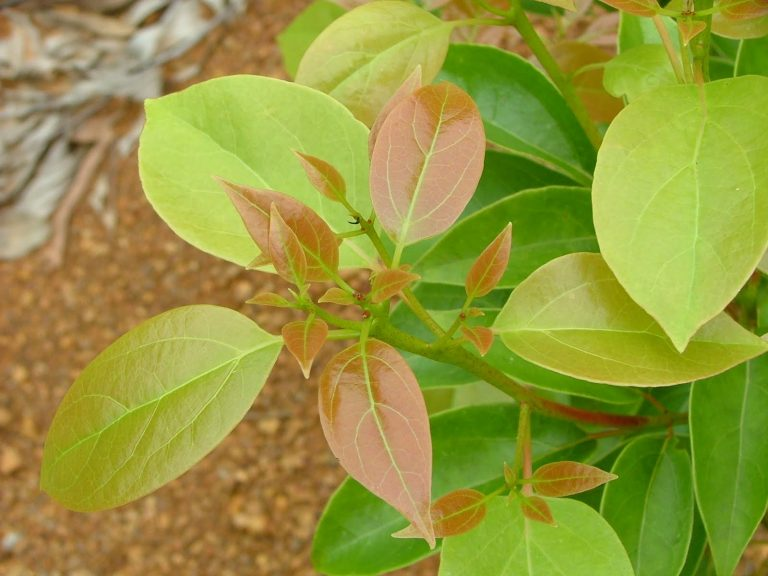
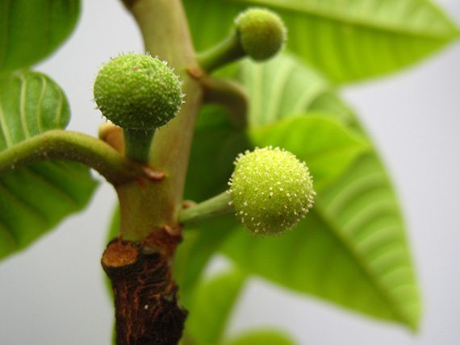
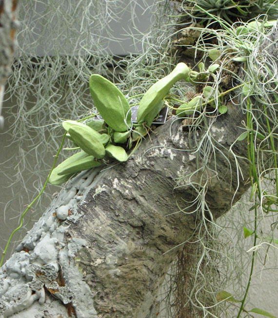
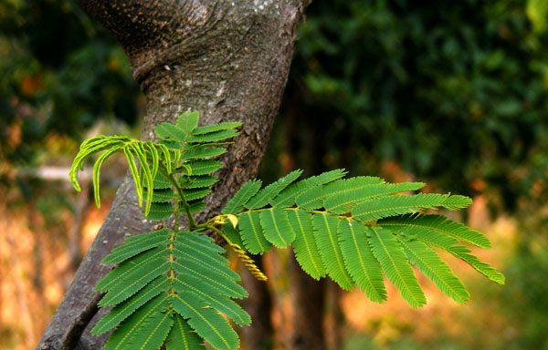
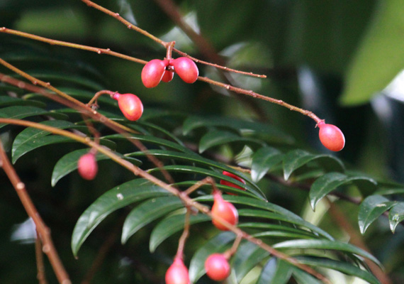

สมุนไพรไทย 22 ชนิดเสี่ยงสูญพันธุ์

นาย นันทศักดิ์ โชติชนะเดชาวงศ์ ผู้อำนวยการกองคุ้มครองภูมิปัญญาการแพทย์แผนไทยและพื้นบ้านไทย กรมพัฒนาการแพทย์แผนไทยและการแพทย์ทางเลือก
กระทรวงสาธารณสุข (สธ.) ได้ประกาศรายชื่อสมุนไพรไทย
จำนวน 22 ชนิด อยู่ใน “ ภาวะเสี่ยงต่อการสูญพันธุ์ ” เหตุเกิดจากเติบโตช้าเนื่องจากต้องใช้ทั้งต้นและราก
ซึ่งมักถูกใช้บ่อยในการรักษาทางการแพทย์ ซึ่งสมุนไพรถูกคัดเลือกมา 7 ชนิด ได้ออกประกาศคุ้มครองและควบคุม ผู้ที่ครอบครองต้องแจ้งจำนวนที่มีเพื่อทำแผนการใช้และการปลูกทดแทน
ปัจจุบันมีสมุนไพร 7 ชนิด ที่ประกาศคุ้มครองและเป็นสมุนไพรที่ต้องควบคุม ได้แก่ 1. ถั่วดินโคก 2. เทพทาโร 3. มะตูมนิ่ม 4. มะหาด 5. เร่ว 6. หัวร้อยรู 7. กระวาน
สมุนไพรไทย 22 ชนิด ที่เสี่ยงอาจจะสูญพันธุ์ ประกอบด้วย :
1. ถั่วดินโคก  สรรพคุณ :
สรรพคุณ : ช่วยลดไข้ในเด็ก ใช้ต้มกับน้ำดื่มเป็นยาบำรุงน้ำนมของสตรีและใบนำมาฝนทาเป็นยาแก้ฝี
2. เทพทาโร

สรรพคุณ : แก้ไข้หวัด แก้ไอ อาการไอเรื้อรัง ตัวร้อน เนื้อไม้ใช้ปรุงเป็นยาหอมลม รักษาท้องขึ้น อืดเฟ้อ จุกเสียด
3. มะตูมนิ่ม  สรรพคุณ :
สรรพคุณ : คนโบราณจะนำมาทำเป็นยาอายุวัฒนะ เพื่อบำรุงกำลัง บำรุงเพศ ชลอความแก่
4. มะหาด

สรรพคุณ : แก่นมีสรรพคุณเป็นยาแก้ลม เปลือกต้นสดนำมาต้มกับน้ำกินเป็นยาแก้ไข้
5. เร่ว  สรรพคุณ :
สรรพคุณ : ช่วยแก้อาการหืด ไอ คลื่นไส้อาเจียน รับประทานอาหารไม่ได้ ผลช่วยแก้เสมหะในลำคอ
6. หัวร้อยรู  สรรพคุณ :
สรรพคุณ : ช่วยบำรุงหัวใจ หัว ใช้ตำกินเป็นยาขับพยาธิ
7. กระทุ่มนา  สรรพคุณ :
สรรพคุณ : ช่วยลดความดันโลหิต ใบและเปลือกต้มกินเป็นยาแก้ไข้ได้ ใช้อมกลั้วคอแก้อาการอักเสบของเยื่อเมือกในปาก
8. ขันทองพยาบาท  สรรพคุณ :
สรรพคุณ : ใช้เป็นยาบำรุงเหงือก รักษาเหงือกอักเสบ ทำให้ฟันและเหงือกแข็งแรง ขับระดูร้าย แก้โรคตับและถอนพิษ
9. จุกโรหินี

สรรพคุณ : ผลต้มกับน้ำดื่ม จะช่วยลดระดับน้ำตาลในเลือดได้ แก้อาการอ่อนเพลีย ช่วยบำรุงกำลัง รากนำมาเคี้ยวกับพลูช่วยแก้อาการไอ
10. ชะเอมไทย

สรรพคุณ : เปลือกต้นใช้ต้มกับน้ำดื่มช่วยแก้อาการไอ หากอาการไม่ดีขึ้นให้รับประทานติดต่อกัน 2-4 วัน ช่วยขับเสมหะ แก้น้ำลายเหนียว
11. ชิงชี่  สรรพคุณ :
สรรพคุณ : ใบนำมาต้มดื่มเป็นยาแก้ไข้ รากใช้เป็นยาขับปัสสาวะ ช่วยทำให้มดลูกเข้าอู่
12. ตับเต่า  สรรพคุณ :
สรรพคุณ : เปลือกใช้เป็นยารักษาโรครำมะนาด น้ำต้มจากแก่นและรากมีสรรพคุณเป็นยาบำรุงปอด
13. นางแย้มป่า  สรรพคุณ :
สรรพคุณ : รากนางแย้มป่าใช้ต้มเป็นยาแก้ไข้และยังช่วยรักษาลำไส้อักเสบ
14. ปลาไหลเผือก

สรรพคุณ : รากใช้เป็นยาบำรุงกำลัง บำรุงร่างกาย คนเดินป่านิยมกัน เพราะจะช่วยทำให้ร่างกายแข็งแรง คลายอาการปวดเมื่อย เป็นยาขับพยาธิ
15. พังคี  สรรพคุณ :
สรรพคุณ : รากพังคีช่วยแก้อาการจุกเสียด แก้ท้องอืด ท้องเฟ้อ ปวดท้อง รากใช้ตำประคบแก้อาการปวด
16. มะคังแดง  สรรพคุณ :
สรรพคุณ : เนื้อไม้มีรสเย็นเฝื่อน ใช้ต้มกับน้ำดื่มเป็นยาแก้เลือดลมเดินไม่สะดวก แก้พิษโลหิตและน้ำเหลืองเปลือกต้นใช้ตำพอกแผลสดเพื่อห้ามเลือด
17. สะค้าน  สรรพคุณ :
สรรพคุณ : ใช้ประกอบอาหารเพิ่มรสเผ็ด ลำต้นใช้ใส่แกงช่วยให้มีกลิ่นหอม
18. สารภีป่า  สรรพคุณ :
สรรพคุณ : ดอกมีสรรพคุณเป็นยาบำรุงหัวใจ มีสารช่วยขยายหลอดลมและช่วยขับลม เปลือกและดอกมีสรรพคุณเป็นยาแก้บิด
19. อบเชยไทย  สรรพคุณ :
สรรพคุณ : เป็นยาร้อนออกฤทธิ์ต่อไต ม้าม และ กระเพาะปัสสาวะ ใช้เป็นยาบำรุงร่างกายทำให้ร่างกายอบอุ่น กระจายความเย็นในร่างกาย ทำให้เลือดหมุนเวียนดี
20. เฉียงพร้านางแอ  สรรพคุณ :
สรรพคุณ : ลำต้นใช้ต้มน้ำดื่มช่วยบำรุงร่างกาย ทำให้เจริญอาหารหรือใช้เป็นยาเจริญอาหารสำหรับสตรีหลังคลอดบุตร
21. เถาเอ็นอ่อน  สรรพคุณ :
สรรพคุณ : เป็นยาเย็น มีพิษ ออกฤทธิ์ต่อหัวใจและตับ ใช้เป็นยาฟอกเลือด ขับลมในลำไส้และในกระเพาะอาหาร ช่วยแก้อาการจุกเสียดแน่นท้อง
22. เปราะหอม  สรรพคุณ :
สรรพคุณ : ใช้เป็นยาแก้ปวดศีรษะ คลายเครียด ใช้เป็นยาบำรุงหัวใจ บำรุงประสาท หัวเปราะหอมนำมาต้มจะช่วยในการนอนหลับได้เป็นอย่างดีและลดความเครียด